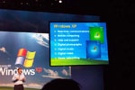

| |
Why I wrote
this book
On October 25, 2001, I
attended the Windows XP launch event in New York's Times Square,
which ended up being an unfortunately boring affair, despite the
general excitement over Microsoft's most impressive--and
consumer friendly--operating system product ever. Microsoft
Chairman and Chief Software Architect Bill Gates presided over
the monotonous procession, which featured highlights such as the
"death of DOS," a lot of product demonstrations, a goofy "Who
Wants to Be a Millionaire" bit with Regis Philbin, and some
general back-slapping.
I was almost
falling asleep by the time the launch event came to a close,
when Gates suddenly started wrapping things up. A PowerPoint
slide filled the massive video screens behind him, and my eyes
refocused, and a smile came to my face. Gates was talking about
the best features in Windows XP, and listed on the slide above
him were the following bullet points:
�
Real-time communications
� Mobile Computing
� Help and support
� Digital photography
� Digital music
� Digital video
� Home networking
I was smiling because I had just proposed the book you're now
reading to Hungry Minds, which has since become part of the
Wiley family. Hungry Minds had also published my previous book,
Great Windows XP Digital Media,
which covers about half of the topics on the Gates slide
mentioned above. This book, Windows XP Home Networking,
neatly covers the other half.
I love it when
a plan comes together.
Even Bill Gates
himself apparently agrees that the digital media and networking
technologies in Windows XP are the best reasons to upgrade. And
that, really, is what this is all about. You can create home
networks (and work with various digital media technologies) with
previous Windows versions, but it isn't as good. It isn't as
fun. And it certainly isn't as easy. The further you go back in
time, in fact, the harder and more technical these tasks become.
And technical
means boring. If you have to know how to manually assign IP
address and DNS settings, perform port forwarding, or configure
technologies with bizarre names like NAT, then the topic we're
discussing is for experts only. And frankly, experts don't need
or want a book about home networking anyway. They're weenies.
I used to write
books for weenies. Heck, I used to be a weenie. But part of
maturing and growing up is that you learn to put things in
perspective. And my current perspective is that technology isn't
the reason I write about these topics. No, I write about these
topics because of what the technology enables.
Let me give you
an example. Since adding wireless networking to my home, my wife
and I can browse the Web, read email, or do anything else that
we used to do from a desktop computer, using a wireless-enabled
laptop or Tablet PC. The difference is, we can do it from the
couch, or from bed, or from the back yard even. We could even
use it from the bathroom if we wanted to, though no one is
owning up to that particular scenario. The point here is that
the wireless technology isn't what's cool. The good part is what
you can do with it.
Here's
another example. Let's say you want to share photos with family
members on the opposite coast. In the past, you might have
ordered double prints and sent them via snail mail when the
pictures came back from the photo developer. Today, you can hook
your digital camera to the PC, acquire the images, resize them
if needed, email select pictures to your family, and the use
Windows Messenger to chat about them in real time. And it all
happens nearly simultaneously. Again, the technology itself
isn't what's cool. It's what you do with that technology that
makes it worthwhile.
Simple
networking is changing the computer from an office-based
productivity tool to a more pervasive, life-enhancing
phenomenon.
Remember, it's
all in how you look at it.
Paul
Thurrott
June 13, 2002 |
|
Find out more
Buy the book
Home
Home Networking
Internet
Connected Home
SuperSite for Windows
WinInfo News
Great XP Digital Media |
|


{kind=link}